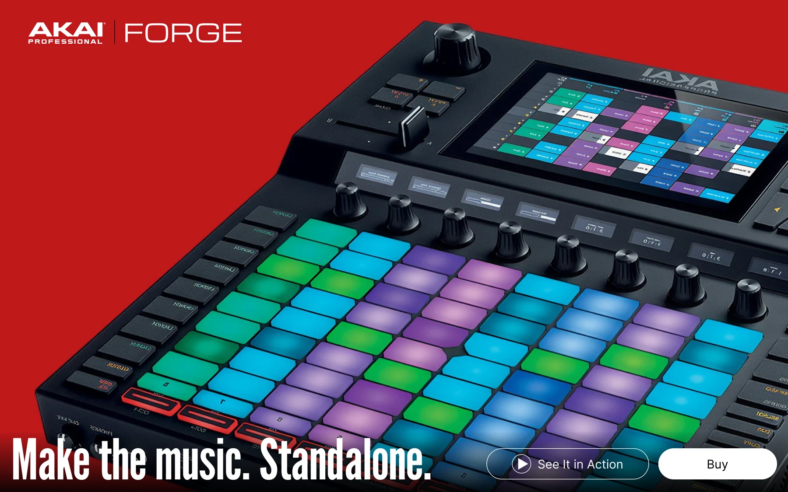

AKAI Force
Визуальный ритм для инструмента,
который создан для музыки.
Web design · Motion
Лендинг / цифровой опыт
Визуальная концепция, композиция, детали

Не рассказать.
Дать почувствовать.
AKAI Force — проект о музыке, самостоятельности и энергии живого исполнения. Визуальная идея строится вокруг самого устройства: оно становится главным героем страницы.
Крупный предметный план, насыщенный красный и плотная типографика сразу задают тон. Первый экран работает как афиша: минимум отвлекающих деталей, максимум присутствия.
Ритм задаёт
прокрутка.
Вместо одинаковых блоков — смена масштаба и темпа. Яркий первый экран переходит в историю продукта, а затем в тёмные секции с деталями устройства.
Движение связывает эти состояния. В демонстрации ниже можно увидеть, как работает переход при прокрутке.
Из эмоции —
в конкретику.
После эмоционального вступления композиция становится спокойнее. На чёрном фоне хорошо читаются фотографии, подписи и технические характеристики.
Так страница меняет задачу: сначала привлекает внимание, затем помогает внимательно изучить инструмент.
Цельный характер.
До последнего экрана.
Красный акцент, глубокий чёрный и разноцветные пэды формируют единый визуальный язык. Большие изображения позволяют рассмотреть продукт, а смена статичных и движущихся сцен сохраняет ощущение музыкального ритма.
Кейс показывает дизайн и визуальные решения. Данные о запуске и бизнес-результатах не представлены.ePsyLive